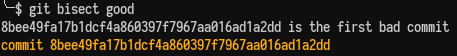
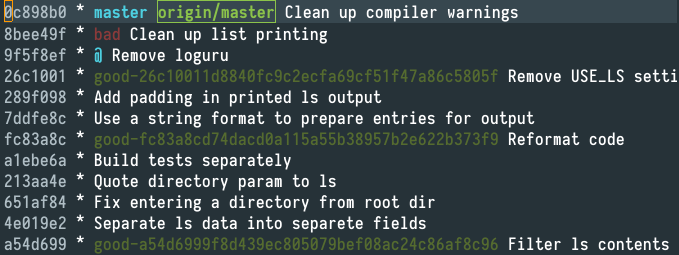

Debugging with git bisect
One of the projects I’ve been working on and off for some time is derid. It’s terminal file manager which wraps ls command and provides the information in the same format but in an interactive fashion. As the name suggests, it’s inspired by dired, the file manager that comes with Emacs (derid being an ananym of dired).
It’s still in early development so it doesn’t have many features you would expect from a file manager yet.
After doing a little bit of clean up and refactoring recently, I’ve noticed that the application crashes when requested to show some directories. I’ve introduced a number of changes in different commits recently and I wasn’t sure which one was the culprit so I decided to use git bisect to identify the one that had introduced the bug.
In this kind of situation you would ideally have an idea where an issue might have been introduced. But with a larger number of commits and if more time has passed it might be very time consuming. Also, a brute-force approach of testing each revision takes a long time, too.
How to use git bisect?
git bisect uses binary search to reduce the number of commits that need to be tested to find the buggy commit.
You start by moving to the root of the repository.
Then, you initialise by running
$ git bisect start
After that, we need to provide two commit hashes:
bad: where we know the bug existsgood: last known version without the bug
In my case, it was:
$ git bisect bad 0c898b0
and
$ git bisect good a54d699
Git will check out version at the commit between good and bad and inform you how many iterations are expected:
Bisecting: 5 revisions left to test after this (roughly 3 steps).
You need to test your code and then run:
$ git bisect good if the bug is gone, or
$ git bisect bad if the bug is still there.
Git will narrow down the range of suspicious revisions and you’ll get to test it again. After a few iterations of this process, git should identify the commit that had introduced the bug:

Bad commit identified with git bisect
Having confirmed the bug originated in that commit, you can finish the process by
$ git bisect reset.
We can also take a look at git log to see which commits we have looked at:

Revisions tested with git bisect
We can see which commits were investigated and which ones we omitted to save some time. git bisect is a useful debugging tool and a great example of practical use of binary search.